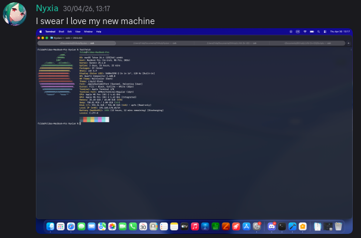
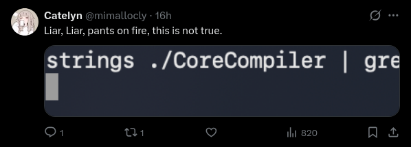
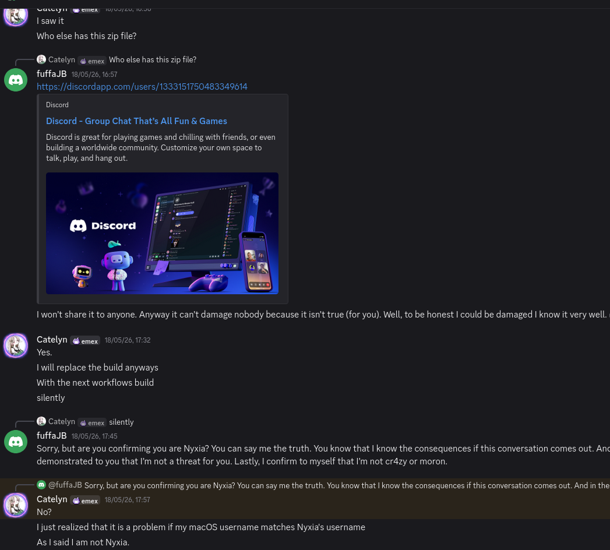
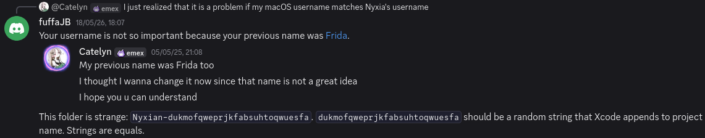
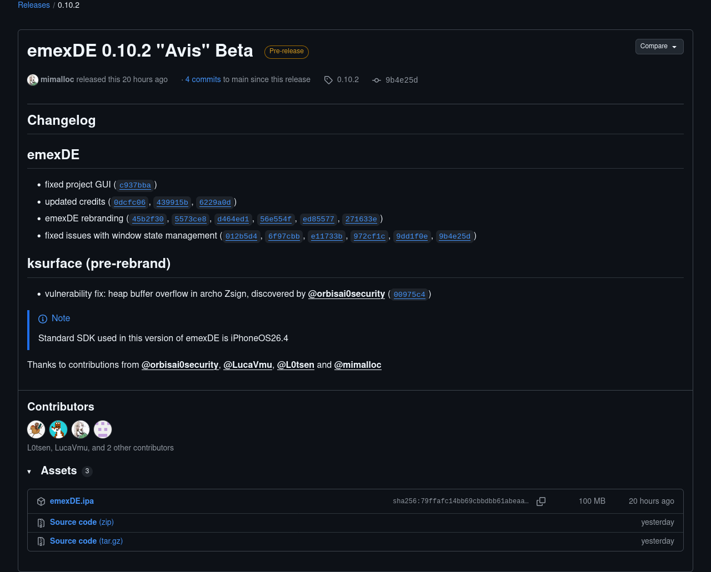

This HTML can’t damage nobody because it isn’t true (for Catelyn). Well, to be honest I could be damaged I know it very well.
See below.
Let's try to proof that @Catelyn and @Nyxia are the same person.
First download this emexDE release uploaded by mimalloc, extract and search a string inside CoreCompiler.
#!/usr/bin/env bash curl -LO 'https://github.com/emexlab/emexDE/releases/download/0.10.2/emexDE.ipa' # replaced silently: https://discord.com/channels/@me/1369024868980490414/1505956258581319831 sha256sum ./emexDE.ipa # expected: 79ffafc14bb69cbbdbb61abeaa49e645645b9977fd7603bd8951f569728425e6 unzip -jn ./emexDE.ipa 'Payload/emexDE.app/Frameworks/CoreCompiler.framework/CoreCompiler' -d emexDE strings ./emexDE/CoreCompiler | grep 'frida'
The output
/Users/frida/Library/Developer/Xcode/DerivedData/Nyxian-dukmofqweprjkfabsuhtoqwuesfa/Build/Intermediates.noindex/ArchiveIntermediates/Nyxian/BuildProductsPath/Release-iphoneos/include/clang/Analysis/ConstructionContext.h /Users/frida/Library/Developer/Xcode/DerivedData/Nyxian-dukmofqweprjkfabsuhtoqwuesfa/Build/Intermediates.noindex/ArchiveIntermediates/Nyxian/BuildProductsPath/Release-iphoneos/include/clang/AST/Type.h /Users/frida/Library/Developer/Xcode/DerivedData/Nyxian-dukmofqweprjkfabsuhtoqwuesfa/Build/Intermediates.noindex/ArchiveIntermediates/Nyxian/BuildProductsPath/Release-iphoneos/include/clang/AST/RecursiveASTVisitor.h /Users/frida/Library/Developer/Xcode/DerivedData/Nyxian-dukmofqweprjkfabsuhtoqwuesfa/Build/Intermediates.noindex/ArchiveIntermediates/Nyxian/BuildProductsPath/Release-iphoneos/include/clang/AST/Expr.h /Users/frida/Library/Developer/Xcode/DerivedData/Nyxian-dukmofqweprjkfabsuhtoqwuesfa/Build/Intermediates.noindex/ArchiveIntermediates/Nyxian/BuildProductsPath/Release-iphoneos/include/clang/AST/AttrVisitor.inc /Users/frida/Documents/GitHub/Nyxian/LLVM-On-iOS/swift/lib/Demangling/Demangler.cpp
Now do the same with the latest release of Nyxian uploaded by mach-port-t.
#!/usr/bin/env bash curl -L 'https://github.com/emexlab/emexDE/releases/download/0.10.1/Nyxian.ipa' -o 'nyxianBySean.ipa' sha256sum ./nyxianBySean.ipa # expected: 9cb33f9d838cea450070d0f01bc38d5a1cb193396492b1889b8c128f77c53c50 unzip -jn ./nyxianBySean.ipa 'Payload/Nyxian.app/Frameworks/CoreCompiler.framework/CoreCompiler' -d nyxianBySean strings ./nyxianBySean/CoreCompiler | grep 'frida'
The output
/Users/frida/Library/Developer/Xcode/DerivedData/Nyxian-dukmofqweprjkfabsuhtoqwuesfa/Build/Intermediates.noindex/ArchiveIntermediates/Nyxian/BuildProductsPath/Release-iphoneos/include/clang/Analysis/ConstructionContext.h /Users/frida/Library/Developer/Xcode/DerivedData/Nyxian-dukmofqweprjkfabsuhtoqwuesfa/Build/Intermediates.noindex/ArchiveIntermediates/Nyxian/BuildProductsPath/Release-iphoneos/include/clang/AST/Type.h /Users/frida/Library/Developer/Xcode/DerivedData/Nyxian-dukmofqweprjkfabsuhtoqwuesfa/Build/Intermediates.noindex/ArchiveIntermediates/Nyxian/BuildProductsPath/Release-iphoneos/include/clang/AST/RecursiveASTVisitor.h /Users/frida/Library/Developer/Xcode/DerivedData/Nyxian-dukmofqweprjkfabsuhtoqwuesfa/Build/Intermediates.noindex/ArchiveIntermediates/Nyxian/BuildProductsPath/Release-iphoneos/include/clang/AST/Expr.h /Users/frida/Library/Developer/Xcode/DerivedData/Nyxian-dukmofqweprjkfabsuhtoqwuesfa/Build/Intermediates.noindex/ArchiveIntermediates/Nyxian/BuildProductsPath/Release-iphoneos/include/clang/AST/AttrVisitor.inc /Users/frida/Documents/GitHub/Nyxian/LLVM-On-iOS/swift/lib/Demangling/Demangler.cpp
Anyway, try again with a Nyxian artifact built and uploaded by GitHub Actions: this one.
#!/usr/bin/env bash curl -L 'https://nightly.link/emexlab/emexDE/actions/runs/25905660664/nyxian.ipa.zip' -o 'nyxianByGitHub.ipa.zip' unzip ./nyxianByGitHub.ipa.zip sha256sum ./nyxian.ipa # expected: c8859a1b6eaa05e4902c8af1ea2d26e208392eaa1108c11f068082e95f7ae854 unzip -jn ./nyxian.ipa 'Payload/Nyxian.app/Frameworks/CoreCompiler.framework/CoreCompiler' -d nyxianByGitHub strings ./nyxianByGitHub/CoreCompiler | grep 'frida'
The output
Empty output! Check the source code of this page to confirm it.
Try again with another word
#!/usr/bin/env bash strings ./nyxianByGitHub/CoreCompiler | grep '/runner/'
The output
/Users/runner//Library/Developer/Xcode/DerivedData/Nyxian-fyzumuoxmssfvfeufebdckbamany/Build/Intermediates.noindex/ArchiveIntermediates/Nyxian/BuildProductsPath/Release-iphoneos/include/clang/Analysis/ConstructionContext.h /Users/runner/Library/Developer/Xcode/DerivedData/Nyxian-fyzumuoxmssfvfeufebdckbamany/Build/Intermediates.noindex/ArchiveIntermediates/Nyxian/BuildProductsPath/Release-iphoneos/include/clang/AST/Type.h /Users/runner/Library/Developer/Xcode/DerivedData/Nyxian-fyzumuoxmssfvfeufebdckbamany/Build/Intermediates.noindex/ArchiveIntermediates/Nyxian/BuildProductsPath/Release-iphoneos/include/clang/AST/RecursiveASTVisitor.h /Users/runner/Library/Developer/Xcode/DerivedData/Nyxian-fyzumuoxmssfvfeufebdckbamany/Build/Intermediates.noindex/ArchiveIntermediates/Nyxian/BuildProductsPath/Release-iphoneos/include/clang/AST/Expr.h /Users/runner/Library/Developer/Xcode/DerivedData/Nyxian-fyzumuoxmssfvfeufebdckbamany/Build/Intermediates.noindex/ArchiveIntermediates/Nyxian/BuildProductsPath/Release-iphoneos/include/clang/AST/AttrVisitor.inc /Users/runner/work/Nyxian/Nyxian/LLVM-On-iOS/swift/lib/Demangling/Demangler.cpp
Now look carefully this image (login required) by Nyxia on Nyxian Discord Server. In particular look terminal tabs title. Are they familiar to you?

Oh, this is the message on Discord server. Check time and date to confirm it!

To answer this X post

Well, Catelyn saw this HTML before it became public and...

IMO, this motivation is weak because one year ago she said to me
Indeed, I wrote to her

Anyway to answer to X post, compare this two screenshots

Then verify yourself. Go to GitHub!